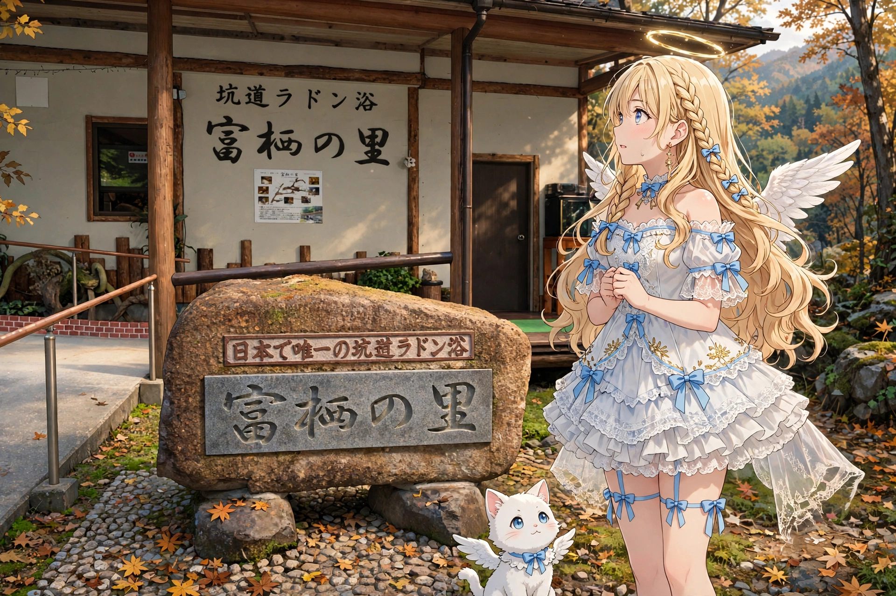
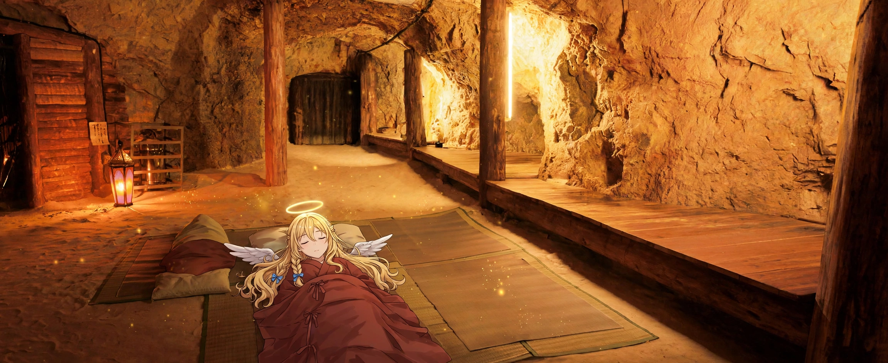
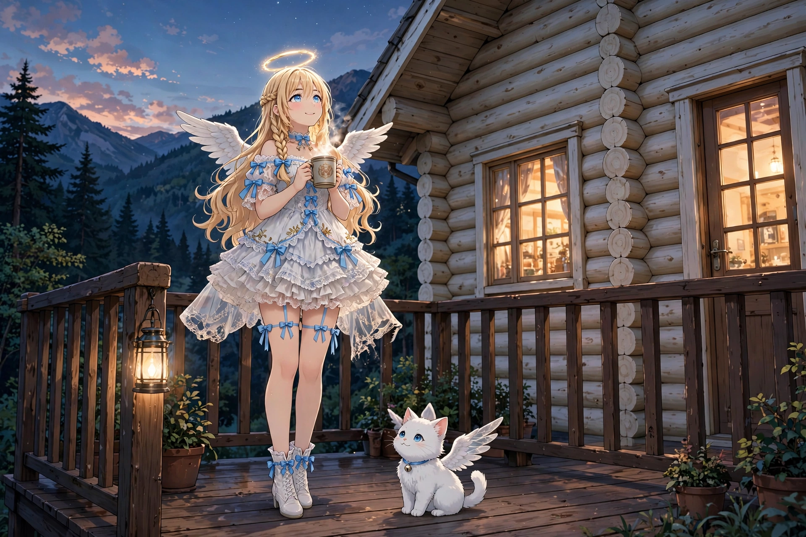
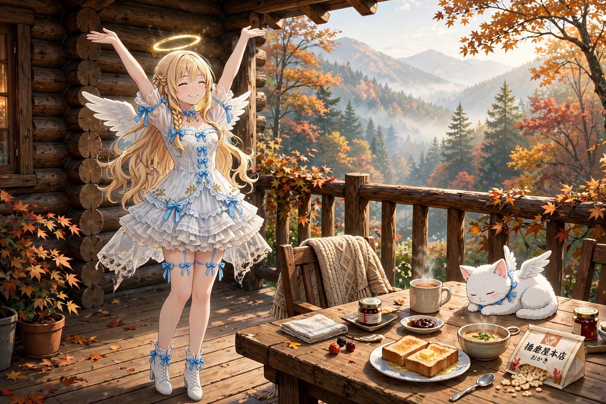

読み切り短編『坑道ラドン浴と、星のヴィラ』を公開しました
2026年11月24日
読み切り短編『坑道ラドン浴と、星のヴィラ』を公開しました。日本で唯一の坑道ラドン浴「富栖の里」と、一棟貸しの宿「ヴィラ富栖」を訪れたセラフィナとモコのお話です。読み切り短編『水車とおかきと、秋の里』の翌日の続きになっています。
1. 日本で唯一の坑道

おかきの里を出た翌日、わたしはもう一つの里に来ていました。
大きな石碑には、こう刻まれていました。「日本で唯一の坑道ラドン浴 富栖の里」。
「坑道、ですか……？」
坑道というのは、山を掘ったトンネルのこと。もともとは鉱山だったこの場所の坑道を、そのまま浴場にしたのだそうです。お風呂に入るのに、山の中へ入っていく。地上に降りてから色々な場所に行きましたが、こんな入り口は初めてでした。
「モコは入口で待っていてくださいね。……もう寝ていますね」
ベンチの上のモコは、到着早々すやすやです。さすがのマイペース。わたしは少し緊張しながら、受付へ向かいました。
2. 洞窟の静けさ

赤茶色の浴着に着替えて、坑道の入口をくぐりました。
中は、洞窟でした。ごつごつした岩壁、木の柱、橙色の明かり。床にマットが並んでいて、利用客の人たちが静かに横になっています。水に浸かるお風呂ではなく、坑道の空気の中で横になって過ごす浴場。それがラドン浴なのだそうです。
わたしもマットに横になって、目を閉じました。
静かでした。遠くで水の滴る音。自分の呼吸の音。温かい空気に包まれていると、翼の先まで力が抜けていくようで……。天界の静けさとは違う、山の腹の底の静けさ。なんだか、地球に「どうぞ」と言われて、預けられているような時間でした。
気がつくと、少し眠っていたようです。起き上がったとき、体が軽く感じたのは、よく眠れたからかもしれません。
3. ヴィラ富栖の夜

今夜の宿は、富栖の里から車で七分ほどの「ヴィラ富栖」。森の中に立つ、ログキャビンの一棟貸しです。
夕ごはんは自炊です。近くの店で買った野菜とパンで、簡単なスープを作りました。モコはキッチンの入口で、監督のように座っています。……昨日の水車小屋でも思いましたが、モコの監督業はだいたい「座って見ている」ことです。
食後のお茶を持って、デッキに出ました。
空が、すごいことになっていました。山の稜線の上に残る夕焼けと、その上に少しずつ瞬き始める星。街では見えない数の星が、静かに増えていきます。
「モコ、見えますか。……あ、寝ていますね」
今日はよく眠る日だったようです。わたしも、星の数が数えきれなくなる頃に、お布団に入りました。
4. 朝のデッキで

朝、目が覚めると、窓の外は霧でした。
山あいの霧が、森を白く包んでいます。デッキに出て、大きく伸びをしました。冷たい空気が肺いっぱいに入って、昨日の坑道の温かさと対になって、体が目覚めていく気がします。
朝ごはんはトーストとスープ、そして食後に、昨日播磨屋本店で買ったおかきを少しだけ。旅の昨日と今日が、テーブルでつながりました。
「帰りたくない、というのは、きっと良い旅の証拠ですね」
帰りの道では、また来る約束をモコとしました。次は誰を誘いましょう。ルチアは坑道で落ち着かなそうですが、星空には弱いはずです。ガブリエラ先輩は、きっと静けさを気に入るでしょう。
里の二日間、ありがとうございました。今日もおつかれさまです。
（了）